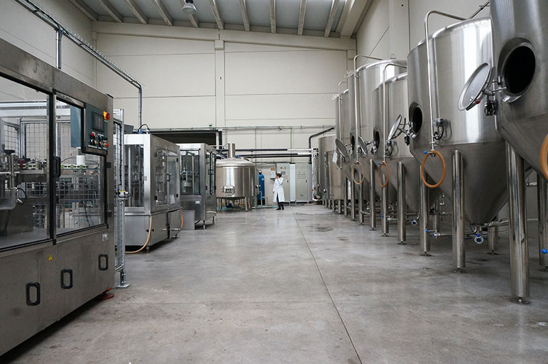

Historia
Valinor fue fundada en el otoño de 2015 en Buenos Aires. Presentamos nuestras cervezas en ferias gastronómicas y en eventos cerveceros desde principios de 2016. Actualmente distribuimos nuestros productos en los alrededores de Buenos Aires y Gran Buenos Aires. Contamos con puestos para ferias y Choperas de Cerveza para alquilar. Nuestro objetivo es ofrecer cerveza local de calidad, de a pequeños lotes, manteniendo altos niveles de calidad. Preparamos algunas cervezas clásicas y otras únicas; experimentando con ingredientes en cada oportunidad que tenemos.
Desde los comienzos, la misión fue elaborar una cerveza de alta calidad, con gran variedad para todos los paladares. Y, de esta manera, poder satisfacer a los consumidores más exigentes y conocedores del mundo de las “Buenas Cervezas”.
La cerveza Valinor es un producto Premium que se destaca por una gran gama de sabores y estilos. Su calidad ha logrado que los comercios la quieran tener por ser un producto tradicional y exótico, debido a su origen y variedades, algunas de ellas muy particulares.
La Fábrica cuenta con una de las instalaciones más modernas e innovadoras en cuanto a microcervecerías del país se refiere, sin por ello, perder la magia de la calidad artesanal. Cuidados procesos de higiene y control de calidad, garantizan a nuestros clientes, cervezas de alta gama elaboradas con materias primas cuidadosamente seleccionadas, tanto importadas como nacionales, las cuales conforman un producto final de inigualable calidad y presentación.